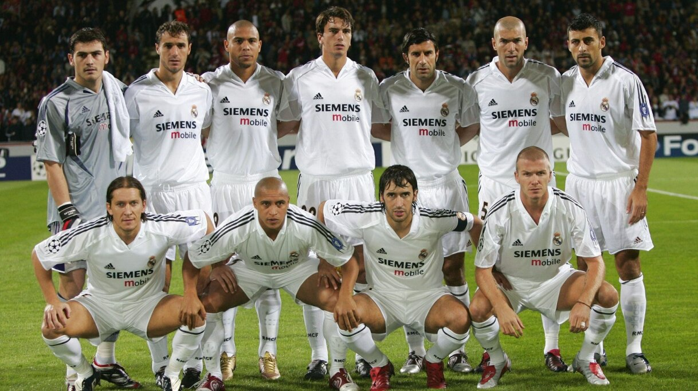

1. Foundation

Real Madrid Club de Fútbol traces its roots back to March 6, 1902,
when a group of football enthusiasts from the Madrid Football Club,
led by brothers Juan Padrós and Carlos Padrós, established the club.
Originally named 'Madrid Football Club,' it underwent several name
changes before receiving the royal patronage in 1920, adding 'Real'
to its name, thus becoming Real Madrid Club de Fútbol.
The early years of the club were marked by modest success in
regional competitions, gradually gaining recognition on the national
stage. Real Madrid experienced a significant boost in 1943 with the
appointment of Santiago Bernabéu as club president, laying the
foundation for its future successes.
2. The Golden Era (1950s-1960s)

The 1950s marked the beginning of Real Madrid's golden era, which
saw the club emerge as a dominant force in European football. Under
the visionary leadership of Santiago Bernabéu and the tactical
genius of coach José Villalonga, Real Madrid assembled a formidable
team featuring legendary players such as Alfredo Di Stéfano, Ferenc
Puskás, and Francisco Gento.
This period witnessed
unprecedented success as Real Madrid clinched an unprecedented five
consecutive European Cups from 1956 to 1960, establishing themselves
as the premier club in Europe. Domestically, they also asserted
their dominance, winning numerous La Liga titles during this period.
3. Transition and Period of Ups and Downs (1970s-1990s)
Following the glorious 1960s, Real Madrid encountered a period of transition and inconsistency in the subsequent decades. Despite maintaining their status as a formidable force in Spanish football, the club struggled to replicate its European dominance. The 1970s and 1980s saw Real Madrid facing stiff competition domestically and internationally. However, there were still notable achievements, including winning the UEFA Cup in 1985 and capturing several domestic league titles. The club underwent managerial changes and faced financial challenges during this period, contributing to a rollercoaster ride of successes and setbacks.
4. Galácticos Era (Late 1990s-2000s)
The late 1990s and early 2000s witnessed the emergence of the "Galácticos" era, characterized by high-profile signings and star-studded squads. With presidents like Florentino Pérez at the helm, Real Madrid embarked on a mission to assemble a team of global superstars. Players like Zinedine Zidane, Luís Figo, Ronaldo, and David Beckham were among the marquee signings during this period. Under the managerial guidance of Vicente del Bosque and later, Carlo Ancelotti, Real Madrid experienced a resurgence, clinching multiple La Liga titles and asserting their dominance in European competitions. The highlight of this era was winning the UEFA Champions League in 2000, 2002, and 2014.
5. Continued Success and Modern Era (2010s-Present)

In the 2010s, Real Madrid continued to build upon its rich legacy, achieving sustained success in both domestic and European competitions. Under the management of José Mourinho, Zinedine Zidane, and others, the club maintained its status as one of the world's elite football clubs. The decade saw Real Madrid secure an unprecedented four UEFA Champions League titles, including a historic three consecutive triumphs from 2016 to 2018. Additionally, they added to their trophy cabinet with numerous domestic league titles and FIFA Club World Cup victories. Despite facing challenges on and off the field, Real Madrid remains synonymous with excellence, tradition, and a relentless pursuit of glory in the world of football.